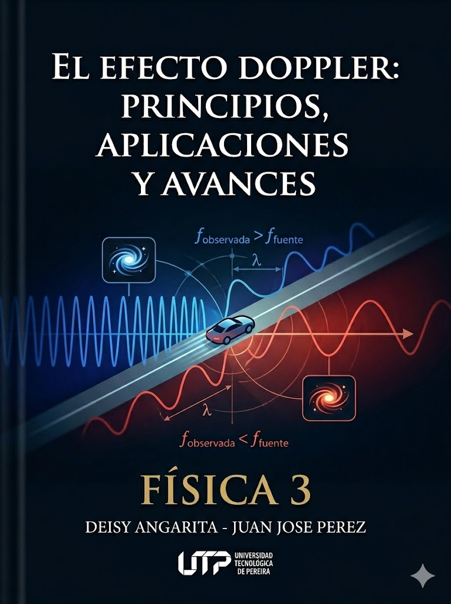

EFECTO DOPPLER

Índice de Contenidos
¿Qué es el Efecto Doppler?
El Efecto Doppler es el cambio aparente en la frecuencia (y la longitud de onda) de una onda cuando existe movimiento relativo entre la fuente emisora y el observador. Aplica a todo tipo de ondas: sonoras, electromagnéticas, de agua, etc.
Contexto Histórico
Christian Andreas Doppler (1803–1853), físico austríaco, presentó su teoría en 1842 en su publicación Über das farbige Licht der Doppelsterne ("Sobre la luz coloreada de las estrellas dobles"), proponiendo que el color observado de una estrella dependía de su velocidad radial.
En 1845, el meteorólogo holandés Christophorus Buys Ballot realizó la primera verificación experimental: colocó trompetistas en un tren en movimiento y músicos con oído absoluto en la estación, comprobando el cambio de tono predicho por Doppler.
En 1848, el físico francés Armand Fizeau extendió la teoría a ondas electromagnéticas, por lo que en Francia se conoce como efecto Doppler-Fizeau.
¿Por qué ocurre?
Las ondas se propagan en el medio a una velocidad \(c\) que no depende del movimiento de la fuente. Si la fuente se mueve en la misma dirección de propagación, los frentes de onda se comprimen por delante (menor \(\lambda\), mayor \(f\)) y se expanden por detrás (mayor \(\lambda\), menor \(f\)).

⚠️ Importante: El efecto Doppler ocurre incluso si solo el observador se mueve. La clave es el movimiento relativo entre fuente y observador respecto al medio de propagación.
El Fenómeno Físico

Fuente en Movimiento (Observador en Reposo)
Consideremos una fuente que emite ondas de frecuencia \(f_0\) y se mueve con velocidad \(v_f\) hacia un observador estacionario. La velocidad del sonido en el medio es \(c\).
Delante de la fuente (la fuente se acerca al observador): en un período \(T = 1/f_0\), la fuente avanza \(v_f \cdot T\). El frente de onda anterior ya se ha expandido un radio \(c \cdot T\). La distancia entre frentes consecutivos se reduce:
Detrás de la fuente (la fuente se aleja): la fuente se mueve en sentido opuesto al frente, aumentando la separación:
Como \(f = c/\lambda\), las frecuencias percibidas son:
Observador en Movimiento (Fuente en Reposo)
Si la fuente está fija, la longitud de onda \(\lambda\) no cambia. Pero el observador se mueve con velocidad \(v_o\) y la velocidad relativa de los frentes de onda respecto a él es \(c \pm v_o\):
\(+\) si se acerca a la fuente, \(-\) si se aleja.
Diferencia fundamental: cuando la fuente se mueve, \(\lambda\) cambia físicamente. Cuando el observador se mueve, \(\lambda\) queda igual pero la tasa de interceptación de frentes cambia.
Análisis Geométrico

En la figura, la fuente emite un frente de onda en el punto A y se desplaza al punto B en un tiempo \(t\). El primer frente se ha expandido un radio \(c \cdot t\). La fuente ha recorrido \(v_f \cdot t\).
La longitud de onda efectiva delante de la fuente es la diferencia entre ambas distancias dividida por el número de ciclos emitidos \(n = f_0 \cdot t\):
Análogamente, detrás:
Derivación de la Fórmula General
Cuando ambos — fuente y observador — se mueven, debemos combinar ambos efectos. La longitud de onda modificada por el movimiento de la fuente es interceptada por un observador que también se desplaza:
Ecuación General del Efecto Doppler Acústico
\[ \boxed{f' = f_0 \cdot \frac{c \pm v_o}{c \mp v_f}} \]donde \(c\) = velocidad del sonido, \(v_o\) = velocidad del observador, \(v_f\) = velocidad de la fuente.
Magnitudes y Unidades
| Símbolo | Magnitud | Unidad SI | Descripción |
|---|---|---|---|
| \(c\) o \(v\) | Vel. del sonido | m/s | ≈ 340 m/s en aire a 20°C |
| \(f_0\) | Frecuencia emitida | Hz | Propiedad de la fuente |
| \(f'\) | Frecuencia percibida | Hz | Lo que mide el observador |
| \(v_f\) | Vel. de la fuente | m/s | Respecto al medio |
| \(v_o\) | Vel. del observador | m/s | Respecto al medio |
| \(\lambda\) | Longitud de onda | m | \(\lambda = c/f\) |
| \(M\) | Número de Mach | — | \(M = v_f/c\) |
Casos Particulares
| Caso | Condición | Fórmula |
|---|---|---|
| Solo fuente se acerca | \(v_o=0\) | \(f'=f_0 \cdot \frac{c}{c-v_f}\) |
| Solo fuente se aleja | \(v_o=0\) | \(f'=f_0 \cdot \frac{c}{c+v_f}\) |
| Solo obs. se acerca | \(v_f=0\) | \(f'=f_0 \cdot \frac{c+v_o}{c}\) |
| Solo obs. se aleja | \(v_f=0\) | \(f'=f_0 \cdot \frac{c-v_o}{c}\) |
| Ambos en reposo | \(v_f=v_o=0\) | \(f'=f_0\) |
Efecto sobre la Percepción
🔵 Acercamiento
\(\lambda\) disminuye → \(f'\) aumenta → sonido más agudo.
🔴 Alejamiento
\(\lambda\) aumenta → \(f'\) disminuye → sonido más grave.
⚠️ Mnemotécnica: el numerador se refiere al observador, el denominador a la fuente. Acercamiento siempre incrementa f'.
Convención de Signos
La dirección positiva se define como la línea que va del observador hacia la fuente. Bajo esta convención:
Numerador (\(c + v_o\)): se usa \(+v_o\) si el observador se mueve hacia la fuente (acercamiento).
Denominador (\(c - v_f\)): se usa \(-v_f\) si la fuente se mueve hacia el observador (acercamiento).
Esta convención es consistente: todo movimiento que reduce la distancia fuente-observador produce un aumento de frecuencia.
¿Qué cambia en cada caso?
| ¿Quién se mueve? | ¿Cambia λ? | ¿Cambia f? | ¿Por qué? |
|---|---|---|---|
| Solo la fuente | Sí | Sí | La fuente comprime/expande los frentes al moverse |
| Solo el observador | No | Sí | El observador intercepta frentes a ritmo diferente |
| Ambos | Sí | Sí | Combinación de ambos efectos |
Aplicaciones Tecnológicas
| Aplicación | Tipo de Onda | Uso |
|---|---|---|
| 🚔 Radar policial | Microondas | Medir velocidad vehicular |
| 🏥 Ecografía Doppler | Ultrasonido | Flujo sanguíneo |
| 🌪️ Radar meteorológico | Microondas | Vientos en tormentas |
| 🌌 Astronomía | Luz visible/radio | Velocidad radial de estrellas |
| 🚢 Sonar | Ultrasonido | Detección submarina |
| 🦇 Ecolocación | Ultrasonido | Murciélagos y delfines |
Efecto Doppler con Corriente en el Medio

Cuando el medio de propagación se mueve (viento, corriente marina), las velocidades de fuente y observador deben ser relativas al medio:
El signo depende de si la corriente es favorable (misma dirección) o contraria al movimiento del objeto.
Principio clave: La velocidad del sonido \(c\) ya está referida al medio. No se modifica por la corriente. Solo cambian \(v_f\) y \(v_o\) respecto al medio.
✅ Ejemplo: Buques con corriente
Buque 1: 64 km/h, sonar 1200 Hz. Buque 2: 45 km/h (dirección opuesta). Corriente: 10 km/h. \(c_{agua}=1520\) m/s.
\[ v_{f,\text{rel}} = 17{,}78+2{,}78 = 20{,}56 \text{ m/s} \] \[ f_o = 1200 \cdot \frac{1520-15{,}28}{1520-20{,}56} \approx 1204{,}2 \text{ Hz} \]⚠️ Error común: Sumar la velocidad del viento/corriente a \(c\). La velocidad del sonido en el medio no cambia; lo que cambia es la velocidad relativa de fuente y observador respecto al medio.
Ondas de Choque y Número de Mach

¿Qué es el Número de Mach?
El número de Mach es la razón adimensional entre la velocidad de un objeto y la velocidad del sonido en el medio en que se desplaza:
\[ M = \frac{v_f}{c} \]Fue nombrado en honor a Ernst Mach (1838–1916), filósofo y físico austríaco que en 1887 fotografió por primera vez las ondas de choque de un proyectil supersónico.
Regímenes de Vuelo
| Régimen | Mach | km/h (aprox.) | Ondas |
|---|---|---|---|
| Subsónico | \(M < 0{,}8\) | < 980 | Se propagan en todas direcciones |
| Transónico | \(0{,}8 < M < 1{,}2\) | 980–1470 | Se acumulan frente al objeto |
| Supersónico | \(1{,}2 < M < 5\) | 1470–6125 | Cono de Mach bien definido |
| Hipersónico | \(M > 5\) | > 6125 | Calentamiento extremo del aire |
La Barrera del Sonido
A \(M = 1\), el denominador de la ecuación Doppler se anula: \(f' \to \infty\). Físicamente, todos los frentes de onda se superponen en un plano perpendicular al movimiento, creando una onda de choque de altísima presión — el boom sónico.
7Geometría del Cono de Mach
Cuando \(v_f > c\) (régimen supersónico), la fuente avanza más rápido que las ondas que emite. Los frentes de onda se acumulan formando un cono cuyo semi-ángulo \(\theta\) viene dado por:
Ángulo del Cono de Mach
\[ \boxed{\sin \theta = \frac{c}{v_f} = \frac{1}{M}} \implies \theta = \arcsin\!\left(\frac{1}{M}\right) \]Derivación geométrica: en un tiempo \(t\), la fuente se desplaza \(v_f \cdot t\) (hipotenusa) y la onda se expande \(c \cdot t\) (cateto opuesto). Por trigonometría: \(\sin\theta = c \cdot t / v_f \cdot t = c/v_f\).
| Mach | θ (°) | Abertura total |
|---|---|---|
| 1,0 | 90° | 180° (plano) |
| 1,5 | 41,8° | 83,6° |
| 2,0 | 30,0° | 60° |
| 3,0 | 19,5° | 39° |
| 5,0 | 11,5° | 23° |
A mayor número de Mach, más cerrado es el cono. A \(M=1\), el cono degenera en un plano perpendicular.
El Boom Sónico en la Vida Real
El estallido sónico no ocurre solo al "romper" la barrera del sonido — es un fenómeno continuo: mientras el objeto viaje a \(M \geq 1\), la onda de choque se genera permanentemente. El observador lo escucha como un estallido repentino cuando el cono lo alcanza.
El Concorde volaba a Mach 2.04, el SR-71 Blackbird a Mach 3.3, y el X-15 alcanzó Mach 6.72.
8Efecto Doppler Relativista
Para ondas electromagnéticas (luz, radio, microondas), no existe un medio material de propagación. La velocidad de la luz \(c\) es constante en todos los marcos de referencia (postulado de Einstein, 1905). Por ello, la fórmula clásica no aplica directamente: debe incorporarse la dilatación temporal relativista.
Efecto Doppler Relativista
\[ \boxed{f' = f_0 \cdot \sqrt{\frac{c + v_r}{c - v_r}}} \]\(v_r > 0\): fuente se acerca (blueshift); \(v_r < 0\): se aleja (redshift).
En términos de longitud de onda:
Parámetro de Corrimiento Espectral (z)
En astronomía, se define el parámetro de corrimiento como:
La relación con la velocidad radial (caso no relativista, \(v \ll c\)):
Para el caso completamente relativista:
Redshift, Blueshift y Ley de Hubble

🔴 Redshift (\(z > 0\))
La fuente se aleja del observador. La longitud de onda observada es mayor que la emitida. Las líneas espectrales se desplazan hacia el rojo.
🔵 Blueshift (\(z < 0\))
La fuente se acerca. La longitud de onda observada es menor. Las líneas se desplazan hacia el azul.
La Ley de Hubble (1929)
Edwin Hubble descubrió que casi todas las galaxias presentan redshift, y que el corrimiento es proporcional a la distancia:
Ley de Hubble-Lemaître
\[ \boxed{v = H_0 \cdot d} \]\(H_0 \approx 70\) km/s/Mpc — Constante de Hubble
Esta ley fue la primera evidencia observacional de la expansión del universo. Las galaxias más lejanas se alejan más rápido.
Consecuencias del Doppler EM:
- 🌌 La mayoría de galaxias → redshift → el universo se expande.
- 🔵 Andrómeda → blueshift → se acerca a 110 km/s.
- 🔭 Quásares lejanos → \(z > 7\) → velocidades cercanas a \(c\).
- 📡 CMBR tiene \(z \approx 1100\) → radiación del Big Bang.
Laboratorio Virtual: Simulador Doppler
📌 Este simulador utiliza el modelo vectorial real del efecto Doppler. A diferencia de la fórmula escalar simple, aquí se calcula el producto punto \(\vec{v} \cdot \hat{r}\) (velocidad radial) en tiempo real para cada posición.
Instrucciones de Uso
- 🎯 Arrastra el coche/jet y el micrófono para posicionarlos.
- 🎚️ Usa los sliders para velocidad de fuente, frecuencia y velocidad del sonido.
- 🔊 Activa el audio con el botón de volumen.
- 📊 Consulta la telemetría en el panel derecho.
- 📈 Abre el osciloscopio para ver \(f(t)\).
- 🎨 Personaliza el color y estilo de la onda.
Fenómenos que puedes observar
| Régimen | Observación Visual |
|---|---|
| Subsónico | Ondas comprimidas delante, expandidas detrás |
| Mach 1 | Todos los frentes se apilan en un plano |
| Supersónico | Cono de Mach visible con ángulo \(\theta\) |
| Velocidad negativa | La fuente se mueve en sentido inverso |
⚠️ Haz clic en Pantalla completa para la mejor experiencia visual.
Evaluación — Preguntas ICFES
1. Ambulancia se acerca. ¿Qué pasa con f'?
2. El número de Mach se define como:
3. Fórmula general del Doppler acústico:
4. Avión a Mach 2. Ángulo del cono:
5. Redshift de una galaxia indica que:
6. Ecografía Doppler mide:
7. \(v_f=0\), observador acerca a 50 m/s (c=340, f₀=400 Hz):
8. Cuando ocurre el boom sónico, M es:
Problemas de Desarrollo
Problema 1
Tren acerca a 35 m/s, silbato 600 Hz (\(c=340\)). Hallar \(f'\) acercando y alejándose.
Ver solución
\(f'_{ac}=600 \times 340/305 \approx 668{,}9\) Hz. \(f'_{al}=600 \times 340/375 \approx 544\) Hz.
Problema 2
Murciélago emite 40 kHz, vuela a 10 m/s hacia pared. ¿Frecuencia del eco?
Ver solución
Doble Doppler: \(f_1=40000 \times 340/330 \approx 41212\) Hz. \(f_2=41212 \times 350/340 \approx 42424\) Hz.
Problema 3
Estrella: \(\lambda_0=589\) nm, se observa \(\lambda'=597\) nm. Hallar \(v_r\) y tipo de corrimiento.
Ver solución
\(z=8/589 \approx 0{,}01358\). Redshift (se aleja). \(v_r \approx 4{,}07 \times 10^6\) m/s.
Autoevaluación
| Competencia | ✅ | ⚡ | ❌ |
|---|---|---|---|
| Comprendo el concepto del efecto Doppler | |||
| Aplico la fórmula general correctamente | |||
| Distingo fuente/observador en movimiento | |||
| Comprendo el cono de Mach y M | |||
| Aplico el Doppler relativista | |||
| Identifico aplicaciones tecnológicas |
Resumen de Fórmulas
| Concepto | Fórmula |
|---|---|
| General acústica | \(f'=f_0 \frac{c \pm v_o}{c \mp v_f}\) |
| Fuente móvil | \(f'=f_0 \frac{c}{c \mp v_f}\) |
| Obs. móvil | \(f'=f_0 \frac{c \pm v_o}{c}\) |
| Número de Mach | \(M=v_f/c\) |
| Ángulo cono | \(\theta=\arcsin(1/M)\) |
| Relativista (f) | \(f'=f_0\sqrt{\frac{c+v_r}{c-v_r}}\) |
| Relativista (λ) | \(\lambda'=\lambda_0\sqrt{\frac{c-v_r}{c+v_r}}\) |
| Corrimiento z | \(z=\Delta\lambda/\lambda_0\) |
| Ley de Hubble | \(v=H_0 d\) |
| Doble Doppler | \(\Delta f=2v f_0/c\) |
Glosario
| Término | Definición |
|---|---|
| Efecto Doppler | Cambio de f por movimiento relativo fuente-observador |
| Frente de onda | Superficie que conecta puntos en la misma fase |
| Número de Mach | Razón \(v_f/c\) |
| Boom sónico | Onda de choque al alcanzar \(M \geq 1\) |
| Redshift | \(\lambda\) aumenta (fuente se aleja) |
| Blueshift | \(\lambda\) disminuye (fuente se acerca) |
| Velocidad radial | Componente de v en dirección observador-fuente |
Bibliografía
• Serway & Jewett (2018). Física para ciencias e ingeniería, 10.ª ed.
• Resnick, Halliday & Krane (2002). Física, Vol. 1.
• Tipler & Mosca (2008). Física para la ciencia y la tecnología.
• Doppler, C. (1842). Über das farbige Licht der Doppelsterne.
• Hubble, E. (1929). PNAS, 15(3), 168–173.
Fin del Cuaderno
"El movimiento relativo cambia la frecuencia percibida"
— Christian Doppler, 1842
Juan José Pérez Herrera & Deisy Patricia Angarita
Edición digital interactiva
Universidad Tecnológica de Pereira — 2026
Albert Einstein
Físico teórico — Relatividad🔑 Ingresa tu API Key de Gemini para chatear: